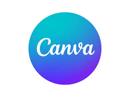

Language Skills
MALAY
- Writing = Very Good
- Speaking = Very Good
ENGLISH
- Writing = Good
- Speaking = Good
Soft Skills
- Have a good leadership
- Able to work in a team
- Able to work under pressure
- Have an ability to communicate well & professionally
- Have a good public relation skill
- Able to follow the instruction well
- Have a good time management
Other Necessary Skills
1. Can use microsoft such as microsoft :
- Words
- Power Point
- Spreadsheet
- Office
2. Can make a poster and slideshow through Canva
3. Able to edit video use Filmora
